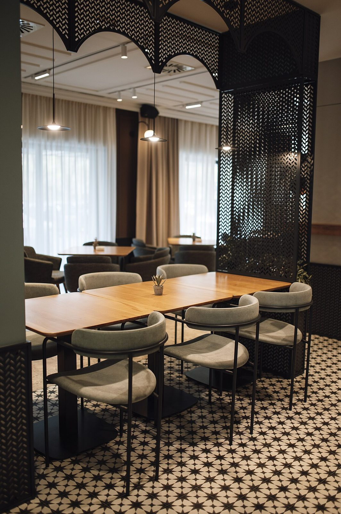
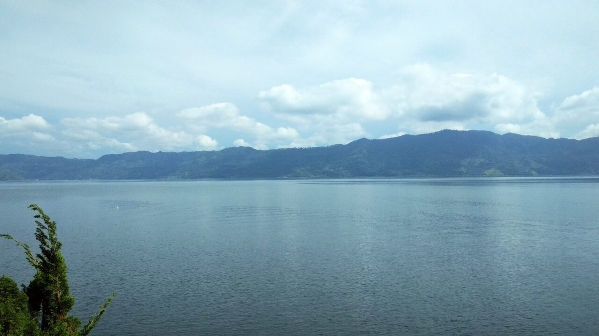
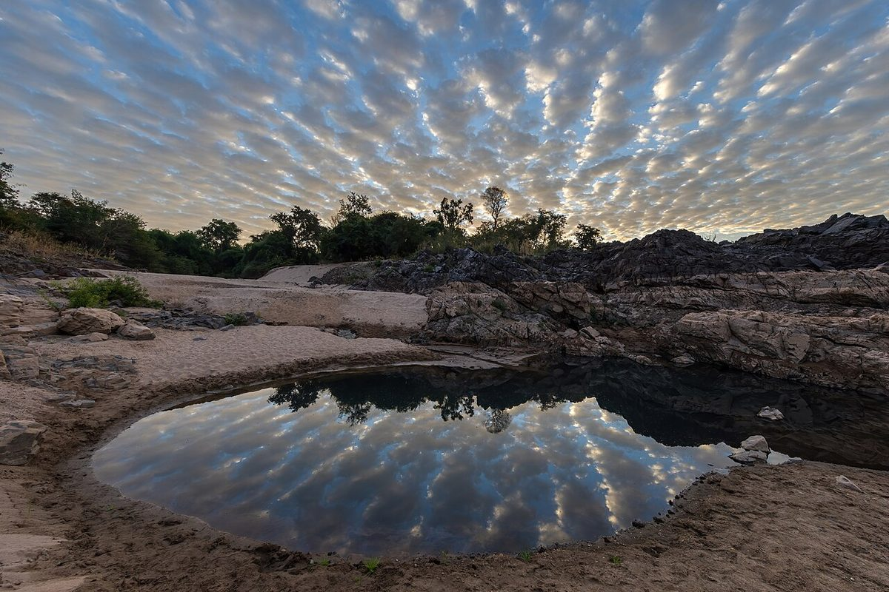
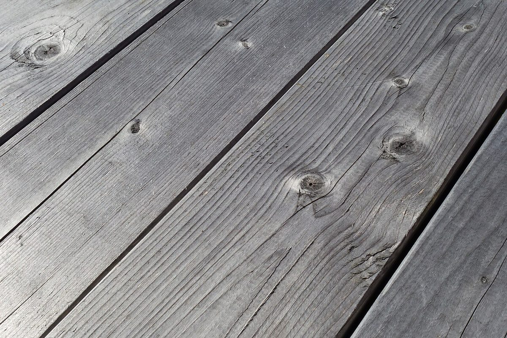
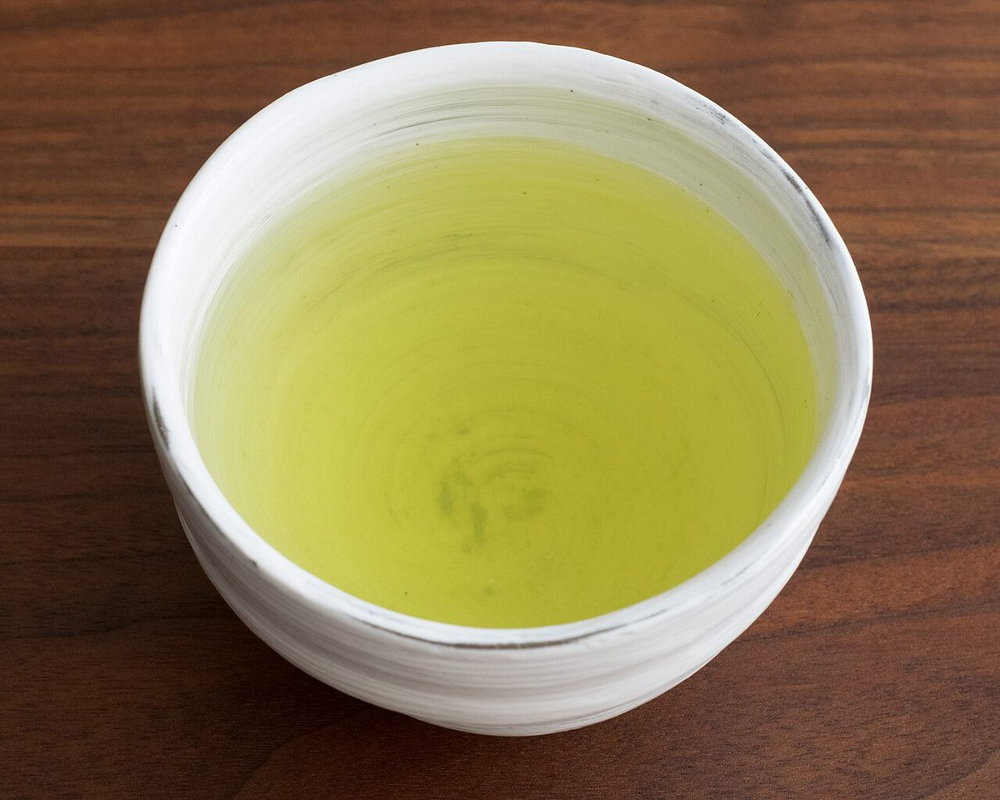
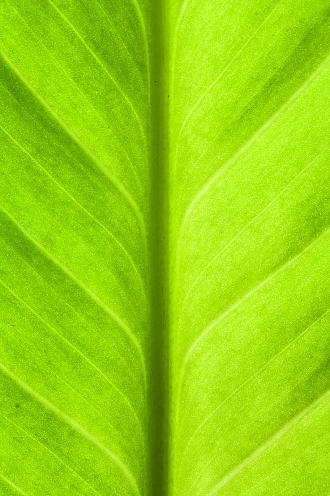
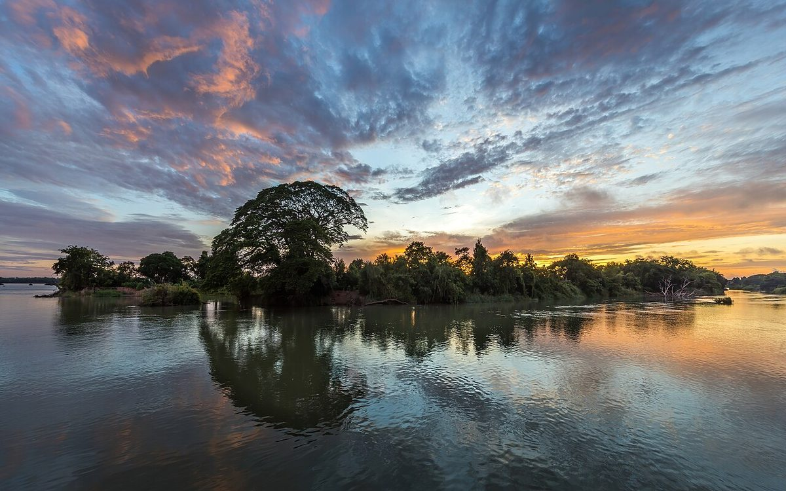
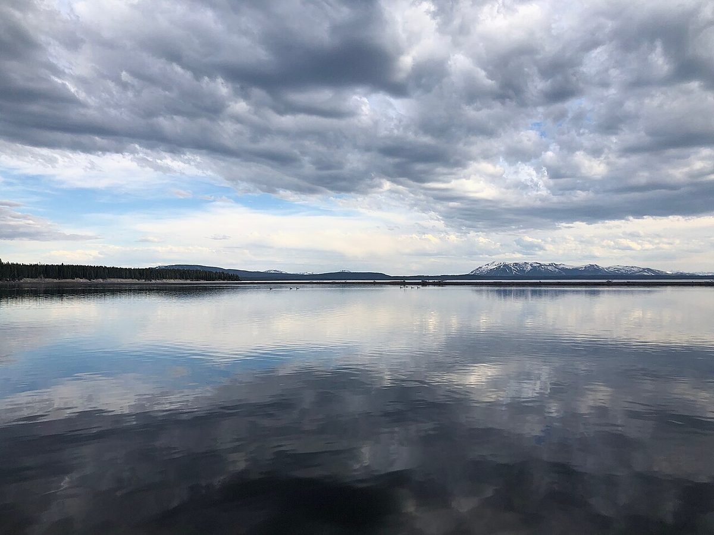
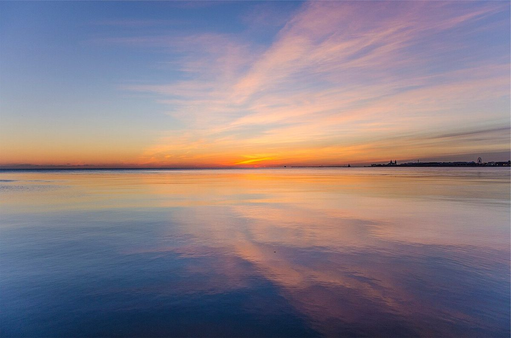

ここのか
ゆっくり、一杯。



キャッチは制作側の案です
- 営業時間準備中(お問い合わせください)
- 電話070-3790-4615
- InstagramここのかのInstagramを見る
制作側の案
このサイトについて
このページは、カフェ「ここのか」のホームページを作るとしたら、というイメージをお見せするための試作サンプルです。
青みのある静かな色合いと、たっぷりとった余白で、ゆっくり一息つくような雰囲気を表現してみました。これは制作側の提案であり、お店の理念や実際の店内の様子を示すものではありません。






ご来店前にお問い合わせください
営業時間・定休日・メニューなどは準備中です。お出かけの前に、お電話またはInstagramでご確認ください。